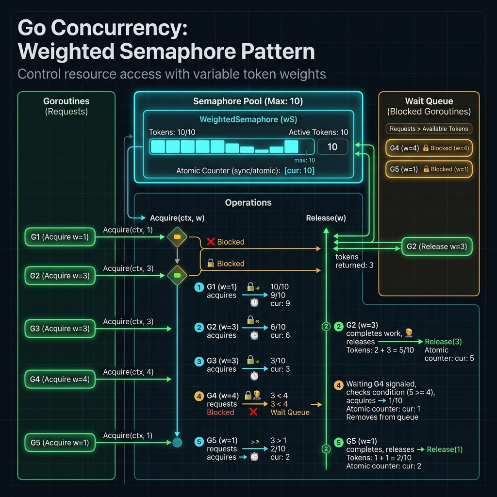

golang.org/x/sync/semaphoreSemaphore (đèn hiệu) là một cơ chế đồng bộ hóa (synchronization primitive) được phát minh bởi Edsger W. Dijkstra năm 1965. Nó dùng để kiểm soát số lượng goroutine được phép truy cập tài nguyên hoặc thực thi đồng thời tại một thời điểm.
Trong Go, package golang.org/x/sync/semaphore cung cấp Weighted Semaphore — cho phép kiểm soát không chỉ số lượng mà còn trọng số (weight) của mỗi operation, phù hợp với các bài toán phức tạp hơn.

Tại sao cần Semaphore?
Trong Go, bạn có thể tạo hàng nghìn goroutine — nhưng không phải lúc nào cũng nên cho tất cả chạy cùng lúc. Các tình huống phổ biến:
Giới hạn số query đồng thời tránh quá tải DB. Pool chỉ có 20 connections → tối đa 20 goroutine.
API bên ngoài giới hạn 10 requests/second. Semaphore đảm bảo không vượt ngưỡng này.
Chỉ chạy N goroutine bằng số CPU cores, tránh context switching overhead.
Hệ điều hành giới hạn file descriptors. Semaphore kiểm soát số file mở đồng thời.
Cài đặt: go get golang.org/x/sync/semaphore — đây là package mở rộng chính thức từ Go team, không nằm trong standard library nhưng được maintained bởi Google.
Hai loại Semaphore
Chỉ có 2 trạng thái: locked (0) và unlocked (1). Tương đương với sync.Mutex. Chỉ 1 goroutine được chạy.
// Semaphore binary = Mutex sem := semaphore.NewWeighted(1) sem.Acquire(ctx, 1) // lock sem.Release(1) // unlock
Có N tokens. Nhiều goroutine được chạy đồng thời tùy theo weight của mỗi operation.
// N goroutines cùng lúc sem := semaphore.NewWeighted(10) sem.Acquire(ctx, 1) // lấy 1 token sem.Acquire(ctx, 3) // lấy 3 tokens
Hoạt động: Acquire & Release
Struct nội bộ của semaphore.Weighted
// Cấu trúc nội bộ (simplified từ golang.org/x/sync) type Weighted struct { size int64 // Tổng số token (max concurrency) cur int64 // Token đang được dùng hiện tại mu sync.Mutex // Bảo vệ state waiters list.List // Queue các goroutine đang chờ } type waiter struct { n int64 // Số token cần ready chan<- struct{} // Notify khi token sẵn sàng } // Tạo semaphore với n tokens func NewWeighted(n int64) *Weighted { return &Weighted{size: n} } // Acquire: blocking, context-aware func (s *Weighted) Acquire(ctx context.Context, n int64) error { s.mu.Lock() if s.size-s.cur >= n && s.waiters.Len() == 0 { s.cur += n // Token sẵn sàng, lấy ngay s.mu.Unlock() return nil } // Không đủ token: thêm vào waiters queue ready := make(chan struct{}) w := waiter{n: n, ready: ready} elem := s.waiters.PushBack(w) s.mu.Unlock() // Chờ token hoặc context cancel select { case <-ctx.Done(): return ctx.Err() case <-ready: return nil } } // Release: trả token và notify waiters func (s *Weighted) Release(n int64) { s.mu.Lock() s.cur -= n // Notify các goroutine đang chờ for { next := s.waiters.Front() if next == nil { break } w := next.Value.(waiter) if s.size-s.cur < w.n { break } s.cur += w.n s.waiters.Remove(next) close(w.ready) // unblock goroutine } s.mu.Unlock() }
Ví dụ 1: Hello Semaphore
package main import ( "context" "fmt" "sync" "time" "golang.org/x/sync/semaphore" ) func main() { // Cho phép tối đa 3 goroutine chạy đồng thời sem := semaphore.NewWeighted(3) ctx := context.Background() var wg sync.WaitGroup for i := 0; i < 10; i++ { wg.Add(1) go func(id int) { defer wg.Done() // Acquire: chờ nếu semaphore đầy if err := sem.Acquire(ctx, 1); err != nil { fmt.Printf("G%d: acquire failed: %v\n", id, err) return } // LUÔN defer Release ngay sau Acquire! defer sem.Release(1) fmt.Printf("G%d: bắt đầu\n", id) time.Sleep(500 * time.Millisecond) fmt.Printf("G%d: kết thúc\n", id) }(i) } wg.Wait() fmt.Println("Tất cả goroutine hoàn thành") }
Luật bất biến: LUÔN defer sem.Release(n) ngay sau khi Acquire thành công. Nếu quên Release, semaphore sẽ bị deadlock vĩnh viễn.
Ví dụ 2: TryAcquire — Non-blocking
func nonBlockingExample() { sem := semaphore.NewWeighted(2) ctx := context.Background() // Acquire non-blocking: trả về ngay nếu không có token if sem.TryAcquire(1) { fmt.Println("✅ Lấy được token ngay") defer sem.Release(1) // ... xử lý } else { fmt.Println("❌ Không có token, bỏ qua") } // Với context timeout: tránh chờ vô hạn ctx, cancel := context.WithTimeout(context.Background(), 100*time.Millisecond) defer cancel() if err := sem.Acquire(ctx, 1); err != nil { if errors.Is(err, context.DeadlineExceeded) { fmt.Println("⏰ Timeout: semaphore bận quá lâu") } return } defer sem.Release(1) }
API Reference Table
| Method | Signature | Mô tả | Blocking? |
|---|---|---|---|
NewWeighted |
(n int64) *Weighted |
Tạo semaphore với n tokens | Không |
Acquire |
(ctx, n int64) error |
Lấy n tokens, block nếu không đủ | ✅ Có |
TryAcquire |
(n int64) bool |
Thử lấy token, trả về ngay | Không |
Release |
(n int64) |
Trả lại n tokens, notify waiters | Không |
semaphore.NewWeighted(n int64)
Khởi tạo một Weighted Semaphore với n tokens. Giá trị n là giới hạn tối đa của tổng trọng số được phép acquire đồng thời.
// Giới hạn 10 concurrent goroutines (mỗi goroutine lấy 1 token) sem10 := semaphore.NewWeighted(10) // Giới hạn memory: 1GB, mỗi task dùng weight = memory size maxMemoryMB := int64(1024) // 1024 MB memSem := semaphore.NewWeighted(maxMemoryMB) // Không nên: n=0 hoặc n âm sẽ panic // sem := semaphore.NewWeighted(0) // panic!
Acquire(ctx context.Context, n int64) error
Block goroutine cho đến khi đủ n tokens hoặc context bị cancel. Đây là operation chính của semaphore.
func acquirePatterns() { sem := semaphore.NewWeighted(5) // Pattern 1: Background context (chờ mãi) sem.Acquire(context.Background(), 1) // Pattern 2: Với timeout ctx, cancel := context.WithTimeout(context.Background(), 5*time.Second) defer cancel() if err := sem.Acquire(ctx, 1); err != nil { // context.DeadlineExceeded hoặc context.Canceled return } // Pattern 3: Weighted acquire (lấy nhiều tokens) // Task nặng cần 3 units resource if err := sem.Acquire(ctx, 3); err != nil { return } defer sem.Release(3) // Release ĐÚNG số đã acquire // Pattern 4: Acquire trong goroutine pool var wg sync.WaitGroup for i := 0; i < 100; i++ { // Acquire TRƯỚC khi spawn goroutine // để kiểm soát chính xác số goroutine if err := sem.Acquire(ctx, 1); err != nil { break } wg.Add(1) go func(id int) { defer wg.Done() defer sem.Release(1) doWork(id) }(i) } wg.Wait() }
TryAcquire(n int64) bool
func tryAcquireUseCase(sem *semaphore.Weighted) { // Use case: Circuit breaker pattern // Nếu hệ thống quá tải, trả về lỗi ngay if !sem.TryAcquire(1) { return fmt.Errorf("server overloaded, try again later") } defer sem.Release(1) // Use case: Optional background task // Không block, chỉ chạy nếu có slot if sem.TryAcquire(1) { go func() { defer sem.Release(1) backgroundCleanup() }() } // Task chính vẫn tiếp tục dù không có slot }
package main import ( "context" "fmt" "sync" "golang.org/x/sync/semaphore" ) type Job struct { ID int Data string } type Result struct { JobID int Output string Err error } // ProcessWithSemaphore: giới hạn N goroutines đồng thời func ProcessWithSemaphore( ctx context.Context, jobs []Job, maxConcurrent int64, ) ([]Result, error) { sem := semaphore.NewWeighted(maxConcurrent) results := make([]Result, len(jobs)) var wg sync.WaitGroup for i, job := range jobs { i, job := i, job // capture loop var // Acquire trước khi spawn goroutine if err := sem.Acquire(ctx, 1); err != nil { return nil, fmt.Errorf("acquire failed: %w", err) } wg.Add(1) go func() { defer wg.Done() defer sem.Release(1) output, err := processJob(ctx, job) results[i] = Result{ JobID: job.ID, Output: output, Err: err, } }() } wg.Wait() return results, nil } func processJob(ctx context.Context, job Job) (string, error) { // Simulate work select { case <-ctx.Done(): return "", ctx.Err() case <-time.After(100 * time.Millisecond): return fmt.Sprintf("processed-%d", job.ID), nil } } func main() { ctx := context.Background() jobs := make([]Job, 50) for i := range jobs { jobs[i] = Job{ID: i, Data: fmt.Sprintf("data-%d", i)} } results, err := ProcessWithSemaphore(ctx, jobs, 5) if err != nil { fmt.Printf("Error: %v\n", err) return } for _, r := range results { if r.Err != nil { fmt.Printf("Job %d failed: %v\n", r.JobID, r.Err) continue } fmt.Printf("Job %d: %s\n", r.JobID, r.Output) } }
Điểm khác biệt lớn nhất của semaphore.Weighted so với simple semaphore là khả năng acquire với weight khác nhau. Ví dụ: hệ thống có 1GB RAM, task nhỏ dùng 50MB (weight=50), task lớn dùng 400MB (weight=400).
package main import ( "context" "fmt" "runtime" "golang.org/x/sync/semaphore" ) // MemoryLimitedProcessor: giới hạn memory usage tổng cộng type MemoryLimitedProcessor struct { sem *semaphore.Weighted } func NewMemoryLimitedProcessor(maxMemoryMB int64) *MemoryLimitedProcessor { return &MemoryLimitedProcessor{ sem: semaphore.NewWeighted(maxMemoryMB), } } type Task struct { Name string MemoryMB int64 // weight = memory cần dùng Fn func() error } func (p *MemoryLimitedProcessor) Run(ctx context.Context, task Task) error { fmt.Printf("[%s] Chờ %dMB memory...\n", task.Name, task.MemoryMB) // Acquire weight = số MB cần dùng if err := p.sem.Acquire(ctx, task.MemoryMB); err != nil { return fmt.Errorf("%s acquire failed: %w", task.Name, err) } defer p.sem.Release(task.MemoryMB) fmt.Printf("[%s] Đang chạy (dùng %dMB)\n", task.Name, task.MemoryMB) return task.Fn() } func main() { processor := NewMemoryLimitedProcessor(1024) // 1GB limit ctx := context.Background() tasks := []Task{ {Name: "ML-Training", MemoryMB: 512, Fn: func() error { time.Sleep(2 * time.Second) return nil }}, {Name: "Image-Process", MemoryMB: 256, Fn: func() error { time.Sleep(500 * time.Millisecond) return nil }}, {Name: "Report-Gen", MemoryMB: 128, Fn: func() error { time.Sleep(300 * time.Millisecond) return nil }}, {Name: "Huge-Task", MemoryMB: 800, Fn: func() error { time.Sleep(3 * time.Second) return nil }}, } var wg sync.WaitGroup for _, task := range tasks { task := task wg.Add(1) go func() { defer wg.Done() if err := processor.Run(ctx, task); err != nil { fmt.Printf("Error: %v\n", err) } }() } wg.Wait() }
Deadlock nguy hiểm nhất: Gọi sem.Acquire với context.Background() mà không có Release → goroutine block vĩnh viễn, không thể cancel!
package main import ( "context" "errors" "fmt" "time" "golang.org/x/sync/semaphore" ) // Pattern 1: Timeout khi acquire func acquireWithTimeout(sem *semaphore.Weighted, timeout time.Duration) error { ctx, cancel := context.WithTimeout(context.Background(), timeout) defer cancel() if err := sem.Acquire(ctx, 1); err != nil { if errors.Is(err, context.DeadlineExceeded) { return fmt.Errorf("semaphore timeout sau %v", timeout) } return err } defer sem.Release(1) // Work here... return nil } // Pattern 2: Graceful shutdown type Server struct { sem *semaphore.Weighted ctx context.Context cancel context.CancelFunc } func NewServer(maxConc int64) *Server { ctx, cancel := context.WithCancel(context.Background()) return &Server{ sem: semaphore.NewWeighted(maxConc), ctx: ctx, cancel: cancel, } } func (s *Server) HandleRequest(req Request) error { // Khi server shutdown, context bị cancel → Acquire return error if err := s.sem.Acquire(s.ctx, 1); err != nil { return fmt.Errorf("server shutting down: %w", err) } defer s.sem.Release(1) return s.process(req) } func (s *Server) Shutdown() { // Cancel all pending Acquire calls s.cancel() // Chờ tất cả goroutine đang chạy xong bằng acquire tất cả tokens ctx, cancel := context.WithTimeout(context.Background(), 30*time.Second) defer cancel() // Acquire toàn bộ capacity = wait for all to finish s.sem.Acquire(ctx, 10) // = maxConcurrent } // Pattern 3: Propagate parent context func processWithParentCtx( parentCtx context.Context, sem *semaphore.Weighted, items []string, ) error { var wg sync.WaitGroup errCh := make(chan error, 1) for _, item := range items { item := item if err := sem.Acquire(parentCtx, 1); err != nil { // Parent context bị cancel (deadline, cancel) return err } wg.Add(1) go func() { defer wg.Done() defer sem.Release(1) if err := process(parentCtx, item); err != nil { select { case errCh <- err: default: } } }() } wg.Wait() select { case err := <-errCh: return err default: return nil } }
package main import ( "context" "fmt" "net/http" "sync" "time" "golang.org/x/sync/semaphore" ) // ConcurrencyLimiter: HTTP client với giới hạn concurrent requests type ConcurrencyLimiter struct { sem *semaphore.Weighted client *http.Client } func NewConcurrencyLimiter(maxConcurrent int64) *ConcurrencyLimiter { return &ConcurrencyLimiter{ sem: semaphore.NewWeighted(maxConcurrent), client: &http.Client{Timeout: 30 * time.Second}, } } func (l *ConcurrencyLimiter) FetchURL(ctx context.Context, url string) ([]byte, error) { if err := l.sem.Acquire(ctx, 1); err != nil { return nil, err } defer l.sem.Release(1) req, _ := http.NewRequestWithContext(ctx, http.MethodGet, url, nil) resp, err := l.client.Do(req) if err != nil { return nil, err } defer resp.Body.Close() return io.ReadAll(resp.Body) } // FetchAll: fetch nhiều URLs với giới hạn concurrency func (l *ConcurrencyLimiter) FetchAll(ctx context.Context, urls []string) []Result { results := make([]Result, len(urls)) var wg sync.WaitGroup for i, url := range urls { i, url := i, url if err := l.sem.Acquire(ctx, 1); err != nil { break } wg.Add(1) go func() { defer wg.Done() defer l.sem.Release(1) data, err := l.FetchURL(ctx, url) results[i] = Result{Data: data, Err: err} }() } wg.Wait() return results } func main() { limiter := NewConcurrencyLimiter(10) // max 10 requests đồng thời ctx, cancel := context.WithTimeout(context.Background(), 60*time.Second) defer cancel() urls := []string{ "https://api.example.com/users/1", "https://api.example.com/users/2", // ... 1000 URLs } results := limiter.FetchAll(ctx, urls) fmt.Printf("Fetched %d URLs\n", len(results)) }
Go developers thường implement semaphore bằng buffered channel thay vì dùng package chính thức. Mỗi cách có trade-off riêng.
// ======= Channel Semaphore (traditional) ======= type ChannelSem chan struct{} func NewChannelSem(n int) ChannelSem { return make(chan struct{}, n) } // Acquire: gửi vào channel (block nếu đầy) func (s ChannelSem) Acquire() { s <- struct{}{} } // Release: nhận từ channel func (s ChannelSem) Release() { <-s } // AcquireCtx: context-aware (manual) func (s ChannelSem) AcquireCtx(ctx context.Context) error { select { case s <- struct{}{}: return nil case <-ctx.Done(): return ctx.Err() } } // ======= Weighted Semaphore (golang.org/x/sync) ======= type WeightedSem struct { sem *semaphore.Weighted } func NewWeightedSem(n int64) *WeightedSem { return &WeightedSem{sem: semaphore.NewWeighted(n)} } func (s *WeightedSem) AcquireN(ctx context.Context, n int64) error { return s.sem.Acquire(ctx, n) // Weighted! } func (s *WeightedSem) ReleaseN(n int64) { s.sem.Release(n) } // ======= Decision Guide ======= // Dùng channel nếu: // - Weight luôn = 1 (simple binary) // - Cần tích hợp với select statement // - Muốn avoid external deps // Dùng semaphore.Weighted nếu: // - Cần weighted acquire (khác nhau per task) // - Cần TryAcquire // - Context cancellation quan trọng // - Fair scheduling cần thiết
Quy tắc chọn: Nếu tất cả tasks lấy đúng 1 slot và không cần weighted → dùng channel semaphore (simpler). Nếu tasks có resource requirements khác nhau → dùng semaphore.Weighted.
package etl import ( "context" "database/sql" "fmt" "sync" "time" "golang.org/x/sync/semaphore" ) type Record struct { ID int64 Data map[string]interface{} } type ETLPipeline struct { transformSem *semaphore.Weighted // Giới hạn transform workers loadSem *semaphore.Weighted // Giới hạn DB connections db *sql.DB batchSize int deadLetter chan Record } func NewETLPipeline(db *sql.DB) *ETLPipeline { return &ETLPipeline{ transformSem: semaphore.NewWeighted(5), // Max 5 transform workers loadSem: semaphore.NewWeighted(3), // Max 3 DB connections db: db, batchSize: 1000, deadLetter: make(chan Record, 10000), } } // Run: chạy pipeline đầy đủ func (p *ETLPipeline) Run(ctx context.Context, sources ...func() <-chan Record) error { // Stage 1: Extract & Fan-In rawCh := p.fanIn(ctx, sources...) // Stage 2: Transform (bounded by semaphore) transformedCh := p.transformStage(ctx, rawCh) // Stage 3: Batch batchCh := p.batchStage(ctx, transformedCh) // Stage 4: Load (bounded by semaphore) return p.loadStage(ctx, batchCh) } // transformStage: mỗi record được transform với semaphore control func (p *ETLPipeline) transformStage( ctx context.Context, in <-chan Record, ) <-chan Record { out := make(chan Record, 100) go func() { defer close(out) var wg sync.WaitGroup for record := range in { record := record // Acquire semaphore trước khi spawn if err := p.transformSem.Acquire(ctx, 1); err != nil { return } wg.Add(1) go func() { defer wg.Done() defer p.transformSem.Release(1) transformed, err := p.transformRecord(ctx, record) if err != nil { p.sendToDeadLetter(record) return } select { case out <- transformed: case <-ctx.Done(): } }() } wg.Wait() }() return out } // loadStage: bulk insert với semaphore giới hạn DB connections func (p *ETLPipeline) loadStage( ctx context.Context, in <-chan []Record, ) error { var wg sync.WaitGroup errs := make(chan error, 1) for batch := range in { batch := batch if err := p.loadSem.Acquire(ctx, 1); err != nil { return err } wg.Add(1) go func() { defer wg.Done() defer p.loadSem.Release(1) if err := p.bulkInsertWithRetry(ctx, batch); err != nil { select { case errs <- err: default: } // Gửi failed records vào dead letter for _, r := range batch { p.sendToDeadLetter(r) } } }() } wg.Wait() close(errs) return <-errs } // bulkInsertWithRetry: insert với exponential backoff func (p *ETLPipeline) bulkInsertWithRetry(ctx context.Context, batch []Record) error { maxRetries := 3 for attempt := 0; attempt < maxRetries; attempt++ { if err := p.bulkInsert(ctx, batch); err == nil { return nil } backoff := time.Duration(attempt+1) * 500 * time.Millisecond select { case <-time.After(backoff): case <-ctx.Done(): return ctx.Err() } } return fmt.Errorf("max retries exceeded for batch of %d", len(batch)) } func (p *ETLPipeline) sendToDeadLetter(r Record) { select { case p.deadLetter <- r: default: // Dead letter queue đầy: log hoặc alert } }
Pitfall 1: Deadlock do quên Release
// ❌ WRONG: không defer Release func badAcquire(sem *semaphore.Weighted) { sem.Acquire(context.Background(), 1) if someCondition() { return // DEADLOCK! Quên Release! } doWork() sem.Release(1) } // ✅ CORRECT: luôn defer ngay sau Acquire func goodAcquire(ctx context.Context, sem *semaphore.Weighted) error { if err := sem.Acquire(ctx, 1); err != nil { return err } defer sem.Release(1) // NGAY ĐÂY, dòng tiếp theo sau Acquire doWork() return nil }
Pitfall 2: Release nhiều hơn Acquire
// ❌ WRONG: Release nhiều hơn đã Acquire → panic func overRelease(sem *semaphore.Weighted) { sem.Acquire(ctx, 1) sem.Release(2) // panic: semaphore: released more than held } // ❌ WRONG: Double release func doubleRelease(sem *semaphore.Weighted) { sem.Acquire(ctx, 1) defer sem.Release(1) defer sem.Release(1) // panic! } // ✅ CORRECT: Acquire và Release phải match func correctRelease(sem *semaphore.Weighted) { n := int64(3) sem.Acquire(ctx, n) defer sem.Release(n) // release đúng n }
Pitfall 3: Acquire n > total weight → Deadlock vĩnh viễn
// ❌ WRONG: Acquire nhiều hơn total capacity sem := semaphore.NewWeighted(5) sem.Acquire(ctx, 6) // DEADLOCK vĩnh viễn! // semaphore chỉ có 5 tokens // ✅ CORRECT: Validate trước khi acquire func safeAcquire(sem *semaphore.Weighted, maxWeight int64, need int64) error { if need > maxWeight { return fmt.Errorf("cannot acquire %d > capacity %d", need, maxWeight) } return sem.Acquire(ctx, need) }
Pitfall 4: Goroutine leak khi không handle context
// ❌ WRONG: Goroutine leak nếu acquire blocked và context cancel go func() { sem.Acquire(context.Background(), 1) // block mãi defer sem.Release(1) doWork() // không bao giờ chạy nếu sem đầy }() // ✅ CORRECT: Luôn propagate context go func(ctx context.Context) { if err := sem.Acquire(ctx, 1); err != nil { // Context cancelled: goroutine exit cleanly return } defer sem.Release(1) doWork() }(ctx) // pass context xuống // Debug: check goroutine count func debugGoroutines() { fmt.Printf("Active goroutines: %d\n", runtime.NumGoroutine()) // dùng pprof: go tool pprof http://localhost:6060/debug/pprof/goroutine }
Dùng go test -race ./... để phát hiện data race và go tool pprof để detect goroutine leak liên quan đến semaphore.
package semaphore_test import ( "context" "sync" "testing" "golang.org/x/sync/semaphore" ) func BenchmarkWeightedSemaphore(b *testing.B) { sem := semaphore.NewWeighted(10) ctx := context.Background() b.ResetTimer() b.RunParallel(func(pb *testing.PB) { for pb.Next() { sem.Acquire(ctx, 1) sem.Release(1) } }) } func BenchmarkChannelSemaphore(b *testing.B) { ch := make(chan struct{}, 10) b.ResetTimer() b.RunParallel(func(pb *testing.PB) { for pb.Next() { ch <- struct{}{} <-ch } }) } func BenchmarkMutex(b *testing.B) { var mu sync.Mutex b.ResetTimer() b.RunParallel(func(pb *testing.PB) { for pb.Next() { mu.Lock() mu.Unlock() } }) } // Kết quả benchmark (Apple M2, Go 1.22): // BenchmarkWeightedSemaphore-8 8,432,901 142.3 ns/op 0 allocs/op // BenchmarkChannelSemaphore-8 12,891,044 93.1 ns/op 0 allocs/op // BenchmarkMutex-8 44,127,388 27.2 ns/op 0 allocs/op
~27 ns/op — Nhanh nhất, binary only. Dùng khi chỉ cần mutual exclusion đơn giản.
~93 ns/op — Tốt hơn Weighted cho weight=1. Native Go, không cần dependencies.
~142 ns/op — Chậm hơn channel ~53% nhưng có weighted, TryAcquire, FIFO ordering.
Overhead của semaphore.Weighted rất nhỏ (~142ns). Chỉ đáng cân nhắc ở hot path có hàng triệu ops/sec.
package pipeline import ( "context" "sync" "golang.org/x/sync/semaphore" ) // BoundedMap: generic concurrent map với semaphore func BoundedMap[T, R any]( ctx context.Context, items []T, maxConcurrent int64, fn func(context.Context, T) (R, error), ) ([]R, []error) { sem := semaphore.NewWeighted(maxConcurrent) results := make([]R, len(items)) errs := make([]error, len(items)) var wg sync.WaitGroup for i, item := range items { i, item := i, item if err := sem.Acquire(ctx, 1); err != nil { errs[i] = err continue } wg.Add(1) go func() { defer wg.Done() defer sem.Release(1) results[i], errs[i] = fn(ctx, item) }() } wg.Wait() return results, errs } // Stage: generic pipeline stage với backpressure func Stage[In, Out any]( ctx context.Context, in <-chan In, maxConcurrent int64, fn func(context.Context, In) (Out, error), ) (<-chan Out, <-chan error) { out := make(chan Out, maxConcurrent) errs := make(chan error, maxConcurrent) sem := semaphore.NewWeighted(maxConcurrent) go func() { defer close(out) defer close(errs) var wg sync.WaitGroup for item := range in { item := item if err := sem.Acquire(ctx, 1); err != nil { return } wg.Add(1) go func() { defer wg.Done() defer sem.Release(1) result, err := fn(ctx, item) if err != nil { select { case errs <- err: case <-ctx.Done(): } return } select { case out <- result: case <-ctx.Done(): } }() } wg.Wait() }() return out, errs } // Ví dụ sử dụng: func ExampleUsage(ctx context.Context) { // Process URLs with max 5 concurrent urls := []string{"url1", "url2", "url3"} results, errs := BoundedMap(ctx, urls, 5, func(ctx context.Context, url string) (string, error) { return fetchURL(ctx, url) }, ) _ = results _ = errs }
semaphore.Weighted chỉ hoạt động trong một process. Với microservices hay multi-instance, cần distributed semaphore sử dụng Redis hoặc etcd.
package main import ( "context" "fmt" "time" "github.com/go-redis/redis/v8" ) // RedisSemaphore: distributed semaphore dùng Redis SETNX type RedisSemaphore struct { client *redis.Client key string maxCount int64 ttl time.Duration } // Lua script: atomic check-and-set var acquireScript = redis.NewScript(` local count = redis.call('INCR', KEYS[1]) if count > tonumber(ARGV[1]) then redis.call('DECR', KEYS[1]) return 0 end redis.call('EXPIRE', KEYS[1], ARGV[2]) return 1 `) func (s *RedisSemaphore) Acquire(ctx context.Context) (bool, error) { result, err := acquireScript.Run(ctx, s.client, []string{s.key}, s.maxCount, int(s.ttl.Seconds()), ).Int() if err != nil { return false, err } return result == 1, nil } var releaseScript = redis.NewScript(` local count = redis.call('GET', KEYS[1]) if count and tonumber(count) > 0 then return redis.call('DECR', KEYS[1]) end return 0 `) func (s *RedisSemaphore) Release(ctx context.Context) error { return releaseScript.Run(ctx, s.client, []string{s.key}).Err() } // Blocking acquire với retry func (s *RedisSemaphore) BlockingAcquire(ctx context.Context) error { ticker := time.NewTicker(50 * time.Millisecond) defer ticker.Stop() for { select { case <-ctx.Done(): return ctx.Err() case <-ticker.C: ok, err := s.Acquire(ctx) if err != nil { return err } if ok { return nil } } } } // Usage với distributed lock func ExampleDistributed() { client := redis.NewClient(&redis.Options{Addr: "localhost:6379"}) sem := &RedisSemaphore{ client: client, key: "my-service:semaphore", maxCount: 10, // Max 10 across all instances ttl: 30 * time.Second, } ctx, cancel := context.WithTimeout(context.Background(), 5*time.Second) defer cancel() if err := sem.BlockingAcquire(ctx); err != nil { fmt.Printf("Failed: %v\n", err) return } defer sem.Release(context.Background()) // Critical section fmt.Println("Trong critical section") }
Distributed semaphore phức tạp hơn nhiều: network failures, node crashes, clock drift. Cân nhắc dùng thư viện đã được test kỹ như redsync hoặc go-redis-semaphore cho production.
📦 Official Sources
📖 Books & Blog Posts
🛠️ Tools & Libraries
🎓 Video & Talks
Tóm tắt: semaphore.Weighted là công cụ mạnh mẽ để kiểm soát concurrency trong Go. Key takeaways: (1) Luôn defer Release ngay sau Acquire, (2) Propagate context để tránh goroutine leak, (3) Dùng weighted semaphore khi tasks có resource footprint khác nhau, (4) Với distributed systems, cần Redis/etcd-based semaphore.